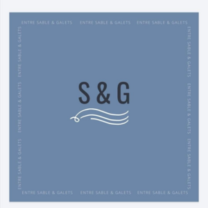

En mars 2027, nous embarquerons à bord d'Azurite, notre First 375 de 1988, pour sept mois de navigation en famille. Nous avons entièrement refait ce bateau nous-mêmes, et nous partagerons le voyage en direct : suivi PolarStep, sciences participatives avec Astrolabe Expeditions, et lives présentés par nos enfants pour les écoles de notre village.
Nous recherchons des partenaires pour finaliser notre équipement avant le départ — voile d'avant et matériel de survie en particulier.
Nous prévoyons de ramener des bonnets écossais dans nos bagages pour les revendre à notre retour, en contrepartie de notre financement participatif. Nous cherchons un partenariat produit, pas juste une remise.
Ce que vous gagnez :
Ce qu'on recherche : un tarif préférentiel sur un volume de bonnets à définir ensemble.
Azurite est basé au port de la Faute-sur-Mer, et nous habitons à l'Aiguillon-sur-Mer. Ce voyage part de chez nous — nous voulons que notre village en fasse partie.
Ce que vous gagnez :
Ce qu'on recherche : un soutien financier ou matériel, à définir selon le partenaire.

Pour discuter d'un partenariat, écrivez-nous — nous répondons à chaque message.
Nous écrire